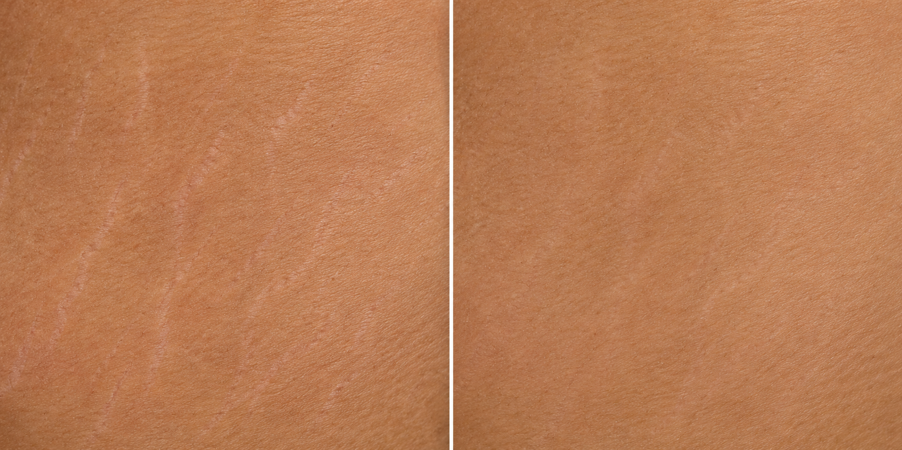

Me senti acolhida e recebi explicações claras sobre cada etapa do atendimento.
Estrias · Cicatrizes · Cuidado estético
Um novo olhar para a sua pele.
Conheça o método Microdreme e descubra um cuidado pensado para a sua história e para as necessidades da sua pele.
Conheça o métodoSamara F. Krevei · Especialista em estrias e cicatrizes
Atendimento acolhedorUm cuidado individualizado
Role para conhecer
A pele tem sua própria história
Um caminho de cuidado, passo a passo.
Veja abaixo uma imagem demonstrativa que será substituída por registros reais e autorizados.

Exemplo · antes Exemplo · depois Imagemilustrativa
Os resultados variam de pessoa para pessoa. Esta imagem é apenas uma referência visual para o protótipo.
01 / 01Entenda a pele
O cuidado começa com informação.
Cremes hidratantes podem contribuir para o conforto e a aparência superficial da pele. A imagem explica por que, segundo a proposta do método, o cuidado com estrias também considera camadas mais profundas.
A avaliação é individual. Indicações, cuidados e resultados dependem de cada pessoa e devem ser conversados com a profissional.
01
Hidratação
Atenção à superfície e à rotina de cuidados.
02
Camadas da pele
A imagem apresenta a diferença entre superfície e derme.

Conheça o processo
Método Microdreme
Uma visão ilustrativa das etapas apresentada no material enviado pela profissional.
01
→
Estria
Antes02
→
Microagulhamento
& ativos
03
Pele cuidada
Depois
!
As imagens são ilustrativas e não garantem um resultado específico. Cada caso precisa de avaliação individual.
Experiências de cuidado
Palavras que acolhem.
Estes relatos são modelos de conteúdo e serão trocados por depoimentos reais autorizados.
O atendimento foi cuidadoso e pude conversar sobre minhas dúvidas com tranquilidade.
Gostei da atenção e do acompanhamento durante o processo.
Depoimentos fictícios usados somente neste protótipo.
Vamos conversar?
Seu próximo passo começa com uma conversa.
Entre em contato para conhecer o atendimento e tirar suas dúvidas sobre o método Microdreme.